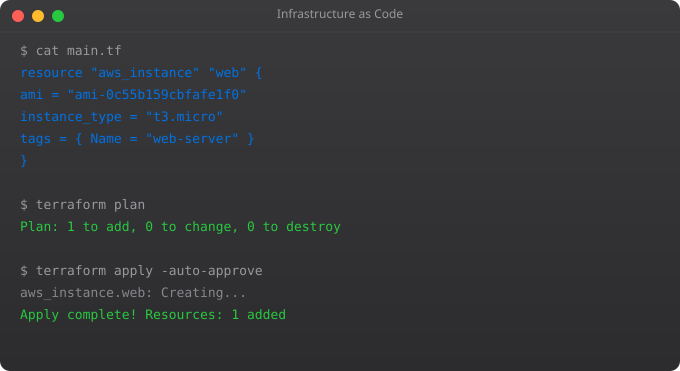

Production networking issues are some of the most stressful moments in DevOps work. A service is down, users are affected, and you need to quickly determine: is the service running? Is the port open? Can it reach the database? Is DNS resolving correctly? Is there a firewall rule blocking traffic? Linux has excellent tools for all of this, and knowing them fluently under pressure is a critical skill.
# ping: basic connectivity test
ping google.com
ping -c 5 8.8.8.8 # Send exactly 5 packets
ping -i 0.5 hostname # Ping every 0.5 seconds
# traceroute: show path packets take
traceroute google.com
tracepath google.com # Alternative, no root needed
# curl: HTTP testing (essential for APIs)
curl https://api.example.com/health
curl -I https://example.com # Headers only
curl -X POST -H "Content-Type: application/json" -d '{"user":"suraj"}' https://api.example.com/login
curl -L https://example.com # Follow redirects
curl -v https://example.com # Verbose output
curl --connect-timeout 5 http://service # Timeout after 5s# ss: show socket statistics (modern replacement for netstat)
ss -tlnp # TCP, listening, numeric, with process names
ss -ulnp # UDP, listening, numeric, with process names
ss -s # Summary statistics
ss -t state established # Established TCP connections only
# netstat (older, still common)
netstat -tlnp # TCP listening ports with processes
netstat -an # All connections numeric
# Check if specific port is listening
ss -tlnp | grep :8080
lsof -i :8080 # Also shows which process uses port 8080# nslookup: query DNS
nslookup example.com
nslookup example.com 8.8.8.8 # Use specific DNS server
# dig: detailed DNS information
dig example.com
dig example.com A # A record (IPv4)
dig example.com MX # Mail exchange records
dig example.com NS # Name servers
dig +short example.com # Short output only
dig @8.8.8.8 example.com # Query Google's DNS
# Check /etc/resolv.conf for DNS config
cat /etc/resolv.conf
# hosts file (overrides DNS)
cat /etc/hosts# Basic SSH
ssh -i key.pem ubuntu@10.0.0.1
# Local port forwarding: access remote service locally
# Access database at 10.0.0.1:5432 via localhost:5432
ssh -L 5432:localhost:5432 ubuntu@bastion-host
# Access private web service via jump host
ssh -L 8080:private-server:80 ubuntu@jump-host
# Remote port forwarding: expose local port remotely
ssh -R 8080:localhost:3000 user@public-server
# SSH config (~/.ssh/config) for shortcuts
Host bastion
HostName 10.0.0.1
User ubuntu
IdentityFile ~/.ssh/aws-key.pem
Host prod-db
HostName 10.0.1.5
User ubuntu
ProxyJump bastion
LocalForward 5432 localhost:5432# ufw (simple firewall -- recommended for Ubuntu)
ufw status # Show current rules
ufw enable # Enable firewall
ufw allow 22 # Allow SSH
ufw allow 80 # Allow HTTP
ufw allow 443 # Allow HTTPS
ufw allow from 10.0.0.0/8 # Allow from private network
ufw deny 8080 # Block port 8080
# iptables (advanced)
iptables -L -n # List all rules
iptables -A INPUT -p tcp --dport 80 -j ACCEPT # Allow HTTP
iptables -A INPUT -p tcp --dport 22 -j ACCEPT # Allow SSH
iptables -A INPUT -j DROP # Drop everything else# Service not accessible -- systematic debugging
# Step 1: Is the service running?
systemctl status nginx
ps aux | grep nginx
# Step 2: Is it listening on the right port?
ss -tlnp | grep 80
# Step 3: Can I reach it locally?
curl http://localhost:80
# Step 4: Is there a firewall blocking?
ufw status
iptables -L -n
# Step 5: Can I reach it from another machine?
ping server-ip
curl http://server-ip:80
# Step 6: Is DNS resolving correctly?
dig myapp.example.com
nslookup myapp.example.comss is the modern replacement for netstat. It is faster because it reads kernel socket data directly. On modern Linux distributions, netstat may not be installed by default. ss -tlnp is the command you want for checking what is listening on which ports.
nc -zv hostname 8080 (netcat) or telnet hostname 8080. For a quick check without installing tools: curl telnet://hostname:8080 or /dev/tcp: timeout 3 bash -c "echo > /dev/tcp/hostname/8080" and check exit code.
A jump host (bastion host) is a server you SSH to first in order to reach servers that are not directly accessible from the internet. Use ProxyJump in your SSH config or the -J flag: ssh -J bastion private-server
iftop shows bandwidth usage by connection. nethogs shows bandwidth per process. tcpdump captures and analyses packets. Wireshark provides GUI packet analysis. vnstat tracks historical bandwidth usage.
The hosts file maps hostnames to IPs, overriding DNS. Used for local development to point a domain to localhost. In Kubernetes, CoreDNS handles internal service discovery. In Docker, the /etc/hosts of each container is managed by Docker automatically.
In Part 5, we go deeper on Git for DevOps -- branching models used in enterprise teams and integrating Git with CI/CD pipelines.
← Back to Blog